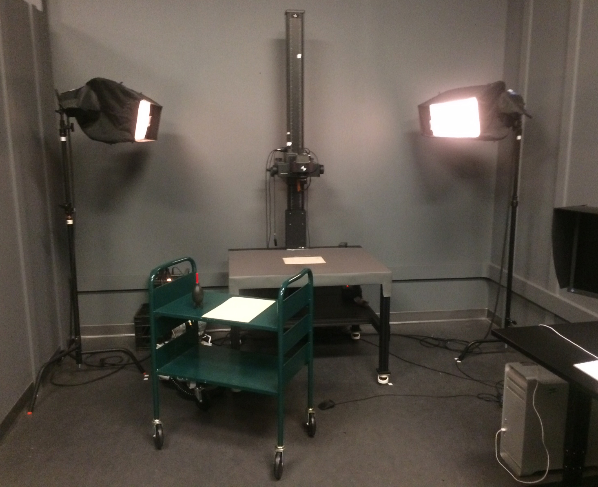
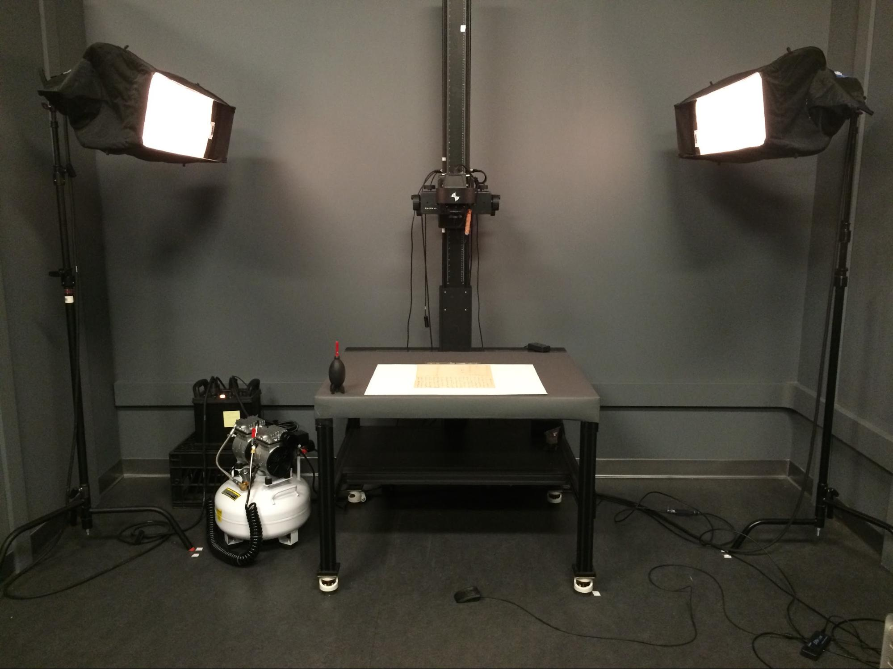
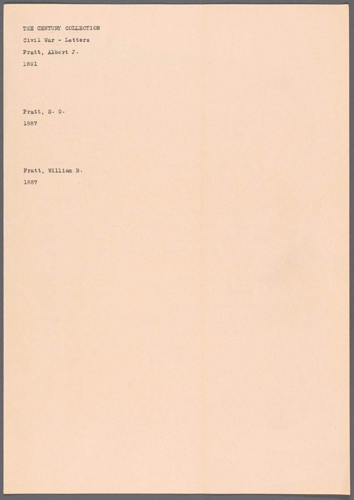
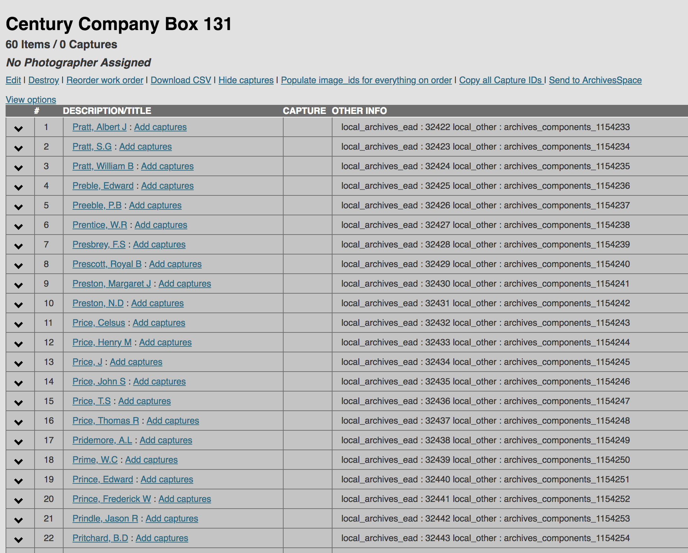
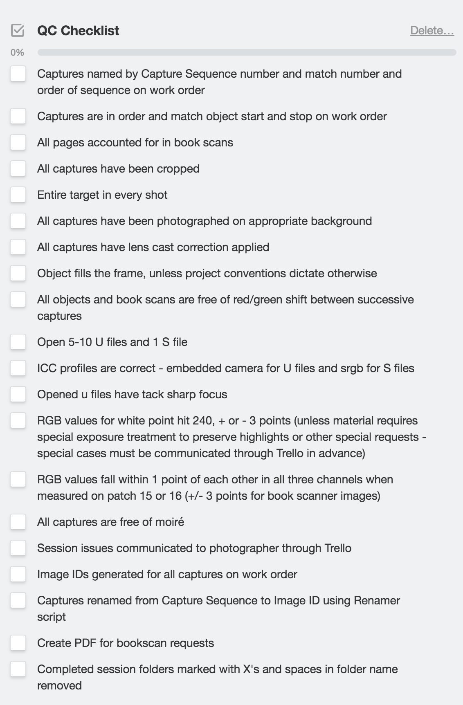

Last updated: 8/14/2018
The following describes the workflow for photographing flat manuscript materials on a copy stand.
Review and double check the material. Open the work order in MMS. Make sure that the items listed in the work order match the material in your folder/box. Leave the browser open.
Lighting
Make sure that your setup provides even lighting throughout the image. For example: for Century Records, we used a basic lighting setup [Figure 1]: Two Profoto strobes; each one positioned at either side of the copy stand.
Figure 1 [workstation Bay 6]

Strobes: Height: 70"
Strobes heads angle: 10 degrees
Power Back: 7.9
Camera height: It is recommended to keep the camera height fixed when working with large volume projects.The height is usually determined by the size of the longest item in a folder/box; unless otherwise instructed. (For Century Records camera height was kept at 33" [Figure 1] with an approx. resolution of 550 ppi.)
Use gray background throughout project. (Only in certain situations, off-white background paper should be used when capturing transparent or translucent materials).
Figure 2 [workstation Bay 6]

Tape target on background paper. This prevents the target from moving out of place.
Double check that Capture One process recipe is correct and U file is checked.
Set lens exposure (For Century Records: typical settings: 8 9/10 at 1/60s [Bay 6])
Focus and leave the color readout on.
Create LCC
Set white point to 240, +/- 3pts. Then set white balance.


Place material on shooting table. If there are any fragments or dust particles on material, carefully remove them using the air “rocket” or compressor.
Begin shooting. (if items are in a folder, photograph them in the same sequence in which they appear in their folder).
Count items shot and add captures to the work order. (If items are in a folder, batch rename their images in Capture One using the 2 digit-counter to make sure that the number corresponds with the work order)
If an oversized item is in a folder: photograph a placeholder for that item and tag it in Capture One so that you can revisit it later. You will probably have to change the camera and light settings when shooting the oversized material.
Re-check focus and exposure after 50-75 shots.
As you continue to shoot, make sure that the number of images in Capture One session match with the number of captures in work order. This extra step saves you time in the end and helps you avoid errors.
Rotation: Orientation of the image should remain the same as original document.
If there are any verso pages, etc., orientation of images of these pages should remain the same as face page of document, even if text is written upside down/vertically.
See examples below:
Image 1
Image 2
Image 3
Image 4
Crop files. Use the auto-crop tool if available.
Check for moire and correct as needed using the moire tool. This step can also be done in the shooting stage.
Review session one last time to ensure files are properly cropped and rotated.
Make sure all captures in the session match number and sequence on work order.
Select all images and clone variants. Take the primary variants and remove crops and set rotation angle tool to 0.01. These are the U files. The cropped second variants are the S files.
Process U and S files.
Use Terminal to transfer files to the server. Make sure your named folder on the server matches the name of your Capture One session.
Check Trello to see if there are any notes from the photographer.
Use the Trello QC checklist. (For large sessions open and check at least 20-30 images).

When QC’ing large sessions: Open finder and cross-check images periodically. Make sure that the names on the work order match capture number and name on letter. It is best to use the jpegs stored in QC folder when reviewing these files.
Sometimes some images might like look like they are out of order but they actually correct since they are shot in their corresponding sequence order.
Please note: each photographer has their own personal shooting style when digitizing materials. The above workflow, however, is just a step-by-step basic guide on how to photograph manuscript materials.